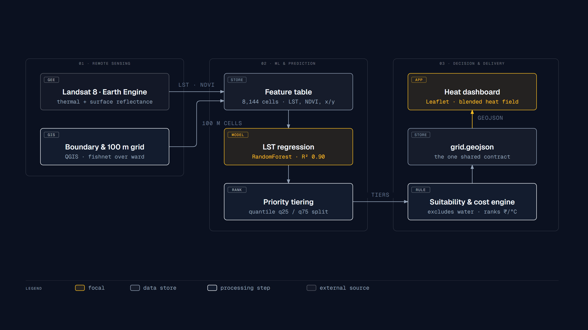
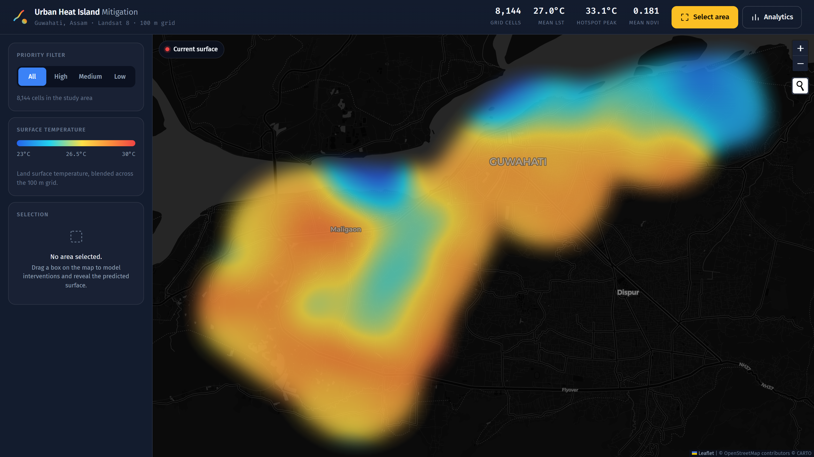
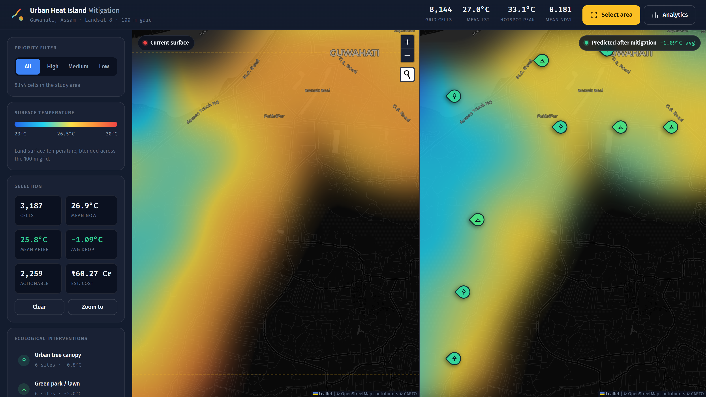
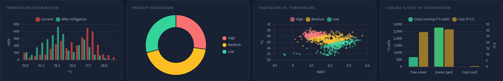

Remote sensing · Machine learning · Urban planning
A decision-support pipeline that turns Landsat thermal imagery into a ranked, costed plan for where to plant, shade and re-surface Guwahati.
01 · The problem
Dense construction replaces vegetation with concrete and asphalt — surfaces that absorb solar radiation by day and release it at night. The result is a measurable temperature gap between the built core and its green surroundings.
02 · The approach
Four modules, each owning one question, connected by a single shared data contract.
Landsat 8 thermal and NDVI composites reduced to a 100 m fishnet over the ward boundary.
A regression model relates surface temperature to vegetation cover and spatial position.
Quantile tiering ranks every cell High / Medium / Low by modelled heat risk.
A rule-based engine attaches an intervention, an expected cooling and a rupee figure to each cell.
03 · System architecture

04 · The data
Google Earth Engine composites Landsat 8 surface temperature and NDVI over the study boundary. QGIS builds a 100 m fishnet; each cell carries a temperature, a vegetation index and a position.
Median 27.3 °C · IQR 26.0–28.2 °C · 99th pct 30.2 °C
05 · Machine learning
The canonical model — a random forest on NDVI and position — reaches R² 0.90 (0.52 °C RMSE) under a random split, rising to 0.94 once spatial-lag features are added. Under a spatial block split — training on one part of the city and predicting an unseen part — performance collapses.
06 · What drives the prediction
Latitude and longitude together carry three quarters of the model's importance — the model is largely learning where the city is. NDVI contributes a quarter, and it is the only feature a planner can actually change.
07 · Priority tiering
Heat risk is split at the 25th and 75th percentiles; a vegetation split at the median decides whether a cell wants canopy, a park, or a cool roof.
| Priority | Recommended action | Cells | Mean LST | Cost |
|---|---|---|---|---|
| High | Tree cover | 1,955 | 28.70 °C | ₹65.4 Cr |
| High | Cool roof | 81 | 29.47 °C | ₹4.3 Cr |
| Medium | Green park | 4,072 | 27.17 °C | ₹90.8 Cr |
| Low | No action | 2,036 | 24.92 °C | — |
Total notional programme cost ₹160.5 Cr · unit rates are planning placeholders, not tendered figures.
08 · The dashboard
The 100 m lattice is interpolated into a smooth field: each cell splats into a weight and a weight×temperature accumulator, a separable blur diffuses both, and dividing them per pixel recovers temperature — so colour still means degrees, not density.

09 · Prediction on demand
The predicted surface stays hidden until a planner draws a box. Ecology pointers then drop on the sites where each measure is viable, spaced so no two overlap.

10 · Where the ecology goes
The coarse action from the model is refined into distinct ecological measures using temperature and vegetation cover, then thinned to representative sites so a pointer marks a project, not a pixel.
| Measure | Assumed cooling | Cells |
|---|---|---|
| Green park / lawn | −2.0 °C | 4,072 |
| Retention pond derived | −2.0 °C | — |
| High-albedo roof | −1.0 °C | 81 |
| Vegetated roof derived | −1.0 °C | — |
| Urban tree canopy | −0.8 °C | 1,955 |
Derived measures are refined from a parent cell by NDVI and inherit its cooling.
11 · Analytics
Filters and area selection drive the same summary — distribution shift, priority mix, the vegetation–temperature relationship, and cooling against cost.

12 · What it adds up to
if every recommended intervention is implemented across the 6,108 actionable cells — for a notional ₹160.5 Cr programme.
13 · What we would not claim
Documented in the repository's own spec audits, not discovered after the fact.
The vegetation–temperature relationship is attenuated. Heat risk skews high and tiers are indicative ranks, not calibrated risk levels.
R² falls from 0.94 to near zero under a block split. The model interpolates well inside the studied area; it does not yet transfer to an unseen district.
Unit rates are planning assumptions. The ranking by cooling-per-rupee is meaningful; the absolute rupee total is not a budget.
Roads, water and restricted zones are filtered only as well as the upstream land-cover proxy allows.
A single Landsat pass captures one moment. Seasonal and diurnal variation is not yet modelled.
Intervention effects come from literature-scale assumptions, not local field measurement.
14 · Next
Apply the NDVI correction and re-fit; report block-CV as the headline metric.
Ground-truth cooling coefficients against local measurement for two or three pilot sites.
Add seasonal composites so priority reflects the worst month, not one pass.
Urban Heat Island Mitigation Simulation · Guwahati, Assam · Landsat 8 · 100 m grid · 8,144 cells